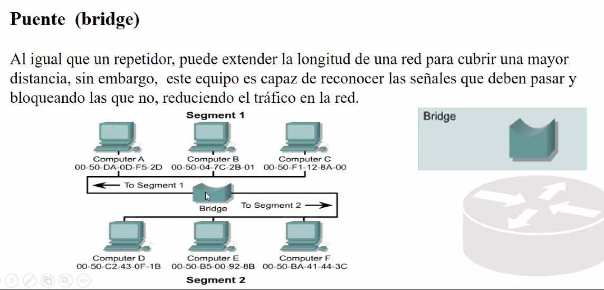

Ve entidades a traves de direcciones fisicas, Puede distinguir entre computadora A y computadora.
Hace lo mismo que un repetidor.
Toma la señal, la rectifica, la regenra, y la amplifica.
Permite el paso o bloque de señales depenndiendo de los equipos que se comunican.+

Las tablas de los puentes de constriyen dinamicamente conforme las computadoras se comunican.- Se prende el bridge
- Q manda una señal (en el header dice que el destinatatio es Ct).
- Bridge la deja pasar.
- Ct resive el mensaje.
- CT responde.
- Bridge actualiza tabla.
Ventanas:
Mas rapida la transferencia de inforamcion.
Menos coliciones.
Se usa la direccion mac para contrilar el trafico.
Por eso todos los dispositovos y tarjetas de red tienen una direccion mac associada.